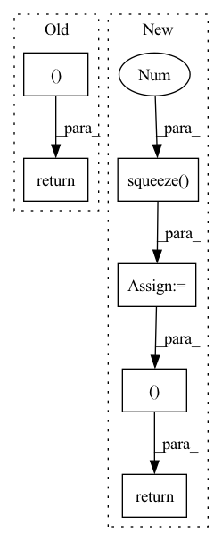

Pattern ID :123

Before Change
// (batch, dim)
attention = attention.squeeze(1)
return cell_output, attention, alignment
After Change
context_vec = torch.bmm(alignment.unsqueeze(1), memory)
// (batch, dim)
context_vec = context_vec.squeeze(1)
return cell_output, context_vec, alignment
In pattern: SUPERPATTERN
Frequency: 4
Non-data size: 6
Instances
Fragment ID: 520806
Project Name: coqui-ai/tts
Commit Name: 2fd37a5bad9374002873db26927694dd0d329e90
Time: 2018-02-05
Author: egolge@mozilla.com
File Name: layers/attention.py
M Class Name: AttentionWrapper
N Class Name: AttentionWrapper
M Method Name: forward(8)
N Method Name: forward(8)
M Parent Class: nn.Module
N Parent Class: nn.Module
M File Name: layers/attention.py
N File Name: layers/attention.py
M Start Line: 57
M End Line: 86
N Start Line: 58
N End Line: 89
'>
Before Change
)
)
return tight_loss, logs
def get_distortion(self, Y_hat, targets):
raise NotImplementedError()
After Change
distortion = torch.logsumexp(distortion, 0) - math.log(n_z)
else:
distortion = distortion.squeeze(0)
rate = rate.squeeze(0)
// E_x[...]. shape: shape: []
rate = rate.mean(0)
distortion = distortion.mean(0)
loss = distortion + self.beta * rate
logs.update(
dict(
loose_loss=loose_loss / math.log(BASE_LOG),
loss=loss / math.log(BASE_LOG),
rate=rate / math.log(BASE_LOG),
distortion=distortion / math.log(BASE_LOG),
)
)
return loss, logs
def get_distortion(self, Y_hat, targets):
raise NotImplementedError()
'>
Fragment ID: 520805
Project Name: yanndubs/lossyless
Commit Name: 0a24755494712f360cfbc0e8b8ac9f6907157997
Time: 2020-12-04
Author: yanndubois96@gmail.com
File Name: lossyless/losses.py
M Class Name: Loss
N Class Name: Loss
M Method Name: forward(4)
N Method Name: forward(4)
M Parent Class: nn.Module
N Parent Class: nn.Module
M File Name: lossyless/losses.py
N File Name: lossyless/losses.py
M Start Line: 35
M End Line: 53
N Start Line: 30
N End Line: 59
'>
Before Change
attn_scores = torch.stack(attn_scores).transpose(0, 1)
mel_outputs = torch.stack(mel_outputs).transpose(0, 1).contiguous()
return mel_outputs, attn_scores
def is_end_of_frames(output, eps=-3.4):
return (output.data <= eps).all()
After Change
// Back to batch first
attn_scores = torch.stack(attn_scores).transpose(0, 1)
mel_outputs = torch.stack(mel_outputs).transpose(0, 1).contiguous()
stop_tokens = torch.stack(stop_tokens).transpose(0, 1).squeeze(2)
return mel_outputs, attn_scores, stop_tokens
def is_end_of_frames(output, eps=-3.4):
return (output.data <= eps).all()
'>
Fragment ID: 520803
Project Name: thuhcsi/tacotron
Commit Name: 34e667ab8dfa8ce50329b538965b161efb3f9aaa
Time: 2021-03-14
Author: johnson.tsing@gmail.com
File Name: model/tacotron.py
M Class Name: Decoder
N Class Name: Decoder
M Method Name: forward(4)
N Method Name: forward(4)
M Parent Class: nn.Module
N Parent Class: nn.Module
M File Name: model/tacotron.py
N File Name: model/tacotron.py
M Start Line: 143
M End Line: 167
N Start Line: 116
N End Line: 176
'>
Before Change
raise RuntimeError("Unknown value for attention norm type")
context = torch.bmm(alignment.unsqueeze(1), inputs)
context = context.squeeze(1)
return context, alignment
class Postnet(nn.Module):
def __init__(self, mel_dim, num_convs=5):
After Change
alpha_norm = self.alpha / self.alpha.sum(dim=1).unsqueeze(1)
// compute context
context = torch.bmm(alpha_norm.unsqueeze(1), inputs)
context = context.squeeze(1)
return context, alpha_norm, alignment
else:
context = torch.bmm(alignment.unsqueeze(1), inputs)
context = context.squeeze(1)
return context, alignment, alignment
'>
Fragment ID: 520802
Project Name: coqui-ai/tts
Commit Name: 961af0f5cdefbb5f267671f6847cf05659962d6c
Time: 2019-04-05
Author: egolge@mozilla.com
File Name: layers/tacotron2.py
M Class Name: Attention
N Class Name: Attention
M Method Name: forward(6)
N Method Name: forward(6)
M Parent Class: nn.Module
N Parent Class: nn.Module
M File Name: layers/tacotron2.py
N File Name: layers/tacotron2.py
M Start Line: 173
M End Line: 175
N Start Line: 193
N End Line: 208